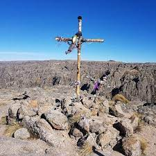
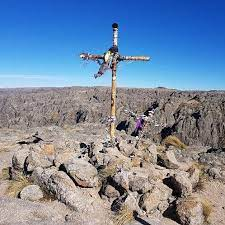

Los Gigantes
Macizo al norte de las Sierras Grandes de Córdoba.
Es una formación de entre 300 y 350 millones de años.
¡Parece
un laberinto de grandes piedras graníticas con siluetas multiformes!.
Uno de los centros de escalada en roca más importantes del
país, cuenta con 400
rutas
equipadas.
Los ríos y arroyos proveen un caudal estable todo el año. El Yuspe es su río más importante.
Se debe recorrer con mucha atención por los senderos marcados.
 

Circuitos
Cerro Mogote: Una de las caminatas más realizadas!. El clásico banquito. Recorrido de 3 a 5 horas. 15 km por arroyos, valles y pendientes. El punto más alto del macizo, a 2374 MSNM. Se puede dormir en los refugios o en la cueva .Cerro La Cruz: Igual ruta que el Mogote. 1,5 hs hasta la quebrada. Sendero privado y luego 200 m de trepada en pendiente pronunciada hasta 2.180 MSNM. En la cima,una vista panorámica del Valle de Punilla, Carlos Paz, Córdoba, y los Diques San Roque y Los Molinos.
Datos Técnicos
Ubicación: Mapa de los Gigantes
Transporte: Desde Córdoba son 84 kms, 27 kms finales de ripio desde Tanti. Líneas Busbud (2h 25m) o Sarmiento (2h 42m)
Refugios:
- Cerro Mogote
- Club Andino Cordoba Aurelio Castelli 3514805126
- Juárez 03541-631350
- Del Cielo 03541-408343
- Pie de Los Gigantes
- Del Pilar 3514215283
- Villa Amelita 03541-628510 (Fede)
- Casas Nuevas 03541-608466/ 3515578068
- Cajones de Achala
- El Gigantillo 03541-553126
Clima
Api Clima